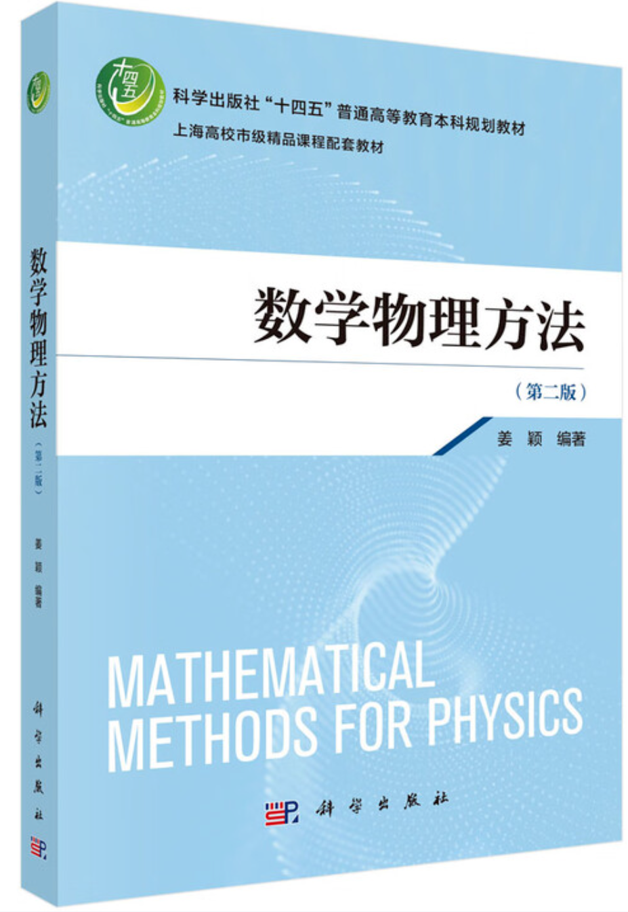
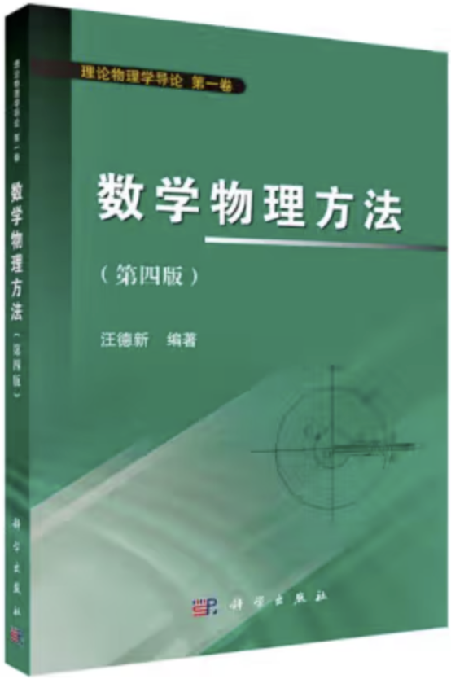
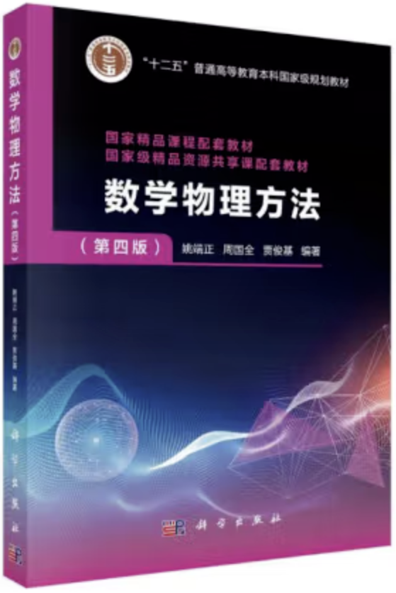
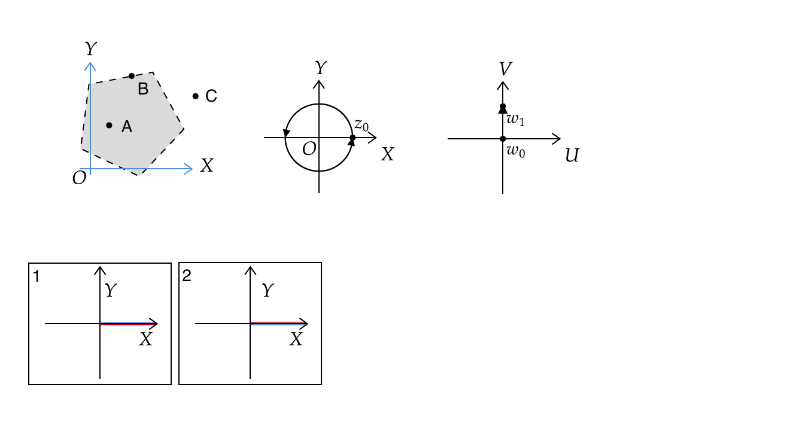
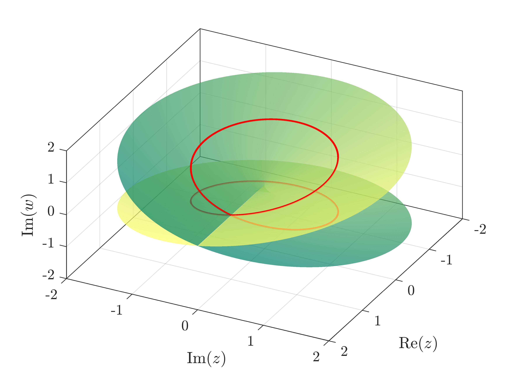

MATHEMATICAL PHYSICS · CHAPTER 01
复数，
从平面到映射
1.1—1.3 · 复数的基本概念、复变函数的导数及解析函数
1.1—1.3 · 复数的基本概念、复变函数的导数及解析函数
通信工程教研室
华中师范大学 · 物理科学与技术学院

第二版
姜颖 · 科学出版社

第四版
汪德新 · 科学出版社

第四版
姚端正等 · 科学出版社
用代数式、复平面和极坐标描述同一个复数。
观察函数如何把一张平面连续地变成另一张平面。
理解“从任意方向趋近”为什么对复导数提出更强要求。
引入虚单位 i² = −1，并不是技巧，而是构造一个封闭的新数域。
拖动点 \(z\)：水平位移改变实部 \(x\)，竖直位移改变虚部 \(y\)。点的位置就是有序实数对 \((x,y)\)。
以 \(z_1,z_2\) 为邻边作平行四边形，对角线就是 \(z_1+z_2\)。拖动红、蓝两点改变两个复数。
× (1−2i)/(1−2i)
11/5 − (2/5)i
核心不是背步骤，而是利用 (a+bi)(a−bi)=a²+b² 消去分母中的虚部。
指数、三角函数与圆周运动，
在复平面中成为同一件事。
沿圆周多转任意整数圈，最终仍回到同一点。
本课程取 0 ≤ arg z < 2π，并有 Arg z = arg z + 2kπ。
函数不再只画一条曲线，而是在重塑整张平面。
以 \(z_0\) 为中心、\(d>0\) 为半径的圆内所有点构成 \(z_0\) 的 \(d\) 邻域。
去掉中心 \(z_0\) 后得到 去心邻域：
在扩充复平面上，\(|z|>R\) 称为 无穷远点的邻域；\(R<|z|<\infty\) 是其去心邻域。
设 \(E\subset\mathbb C\)。若存在 \(\rho>0\)，使 \(z_0\) 的某个邻域完全属于 \(E\)，则 \(z_0\) 是 \(E\) 的内点。
若存在 \(\rho>0\)，使 \(z_0\) 的某个邻域与 \(E\) 没有任何公共点，则 \(z_0\) 是 \(E\) 的外点。
若 \(z_0\) 的任意邻域内，既有属于 \(E\) 的点，也有不属于 \(E\) 的点，则 \(z_0\) 是 \(E\) 的边界点。
若点集 \(G\) 中的每一点都是内点，则称 \(G\) 为开集。换言之，每个点周围都能放下一个完全位于 \(G\) 内的小邻域。
点集 \(D\) 同时满足两个条件时称为区域：① \(D\) 是开集；② \(D\) 是连通的，即 \(D\) 内任意两点都可用一条完全位于 \(D\) 内的折线连接。
一个复变函数可分解为两个二元实函数：
实部 \(u(x,y)\) 与虚部 \(v(x,y)\)。
每个 \(z\) 都有唯一的 \(w=z^2\)；拖动红点，观察像点如何同步运动。
实部 x
控制半径 \(|w|=e^x\)，竖直带映成圆环。
虚部 y
控制辐角 \(\arg w=y\)，水平线映成射线。
周期性：\(e^{z+2\pi\mathrm{i}}=e^z\)。不同的 \(z\) 可以落到同一个 \(w\)。
当 \(y=0\) 时，退化为熟悉的实正弦函数。
虚部方向带来 \(\cosh y,\sinh y\) 的指数增长。
二者都是以 \(2\pi\) 为周期的整函数。
由指数函数的解析性可知，它们在整个复平面解析。
因此 \(\sin z\) 是奇函数，\(\cos z\) 是偶函数。
其中 \(k\in\mathbb Z\)，所有零点均位于实轴。
当 \(y\to\infty\) 时，\(|\sin(\mathrm{i}y)|=\sinh y\to\infty\)，\(|\cos(\mathrm{i}y)|=\cosh y\to\infty\)。故 \(|\sin z|\le1\)、\(|\cos z|\le1\) 不再成立。
设 \(a,b\in\mathbb C\)，且 \(a\ne0\)。复幂通过复对数定义，因此必须保留对数的全部分支。
因 \(e^{2\pi\mathrm{i}nk}=1\)，不同对数分支给出同一个值。
只需取 \(k=0,1,\ldots,q-1\)，便得到全部不同的函数值。
不同的 \(k\) 一般产生无穷多个不同的值，体现为多值性。
在不跨越支割线的区域内选定一个 \(\operatorname{Log}a\)，即可定义单值幂函数 \(a^b=e^{b\operatorname{Log}a}\)。多值性来自 \(\operatorname{Ln}a\) 的多值性。
不同的 z 可以映射到同一个 w。例：z²、eᶻ。
同一个 z 对应多个 w，常由多叶函数取反函数产生。例：√z、Ln z。
多值关系不适合直接讨论导数、积分与级数，因此必须先选定单值分支。
实部固定为 lnρ，虚部随辐角每增加 2π 进入下一层。
在 \(z\) 平面内，正实轴上点的辐角可取 \(2k\pi\)，同一个点因此对应无穷多个等价辐角。
把辐角的取值范围按长度 \(2\pi\) 分层，每一层内都能为每个 \(z\ne0\) 选出唯一辐角。
经过分层，多值函数被划分为若干单值函数；其中每一个单值函数，称为原多值函数的一个单值分支。
支割线把多值函数切成独立单值分支；黎曼面则把这些分支沿割线重新衔接。
跨过割线进入另一层；绕支点两圈后回到原函数值。
每绕支点一圈，函数值的虚部增加 \(2\pi\)，进入新的分支。


这条链解释了为什么复分析需要重新定义“函数所在的空间”。
因为 Δz 可以从平面中的任意方向趋近于 0。
差商化简为 2z+Δz，无论路径如何都趋于 2z。
沿 x 轴趋近，差商为 1；沿 y 轴趋近，差商为 −1。
任给 ε>0，总存在 δ>0，使得当 0<|z−z₀|<δ 时，都有 |f(z)−w₀|<ε。
“任意路径”是复极限存在的关键要求。
在函数的两个支点间作一条连线，并规定：在一个单值分支内，\(z\) 在连续变化的过程中不能跨越该连线。
例如，从 \(z=0\) 出发，沿 \(x\) 轴的正向作一条割线至 \(z=\infty\)，则无论 \(z\) 点在平面上怎样连续变化，都不可能绕 \(0\) 或 \(\infty\) 转一圈。因此 \(z\) 的辐角变化范围必在 \(2\pi\) 范围内，\(w\) 的取值也必在一个单值分支内。
以上连接支点的线称为支割线，或简称割线。另外，还需规定割线上沿 \(z\) 的辐角值，比如将割线上沿辐角值规定为 \(0\)，下沿辐角规定为 \(2\pi\)。
若以 \(x\) 轴负半轴为割线，则可规定割线上沿辐角为 \(\pi\)，下沿辐角为 \(-\pi\)。
f(z)=1
f(z)=−1
两条路径给出不同结果，所以 z→0 时极限不存在。
在整个复平面连续。
eᶻ=eˣcosy+i eˣsiny，因此处处连续。
在选定分支及避开割线后讨论连续性。
从北极 \(N\) 向复平面上的点 \(z=x+\mathrm{i}y\) 作直线，它与球面交于唯一像点 \(Z\)。
沿任意方向令 \(|z|\to\infty\)，像点都趋近北极 \(N=(0,0,1)\)。因此扩充复平面只有一个无穷远点。
定义：设 \(w=f(z)\) 是在 \(z\) 点邻域定义的单值函数，若
在 \(z\) 点存在，则称 \(f(z)\) 在 \(z\) 点可导或可微（二者概念有差别但等价），并称此极限值为 \(f(z)\) 在 \(z\) 点的导数，记为 \(f'(z)\)。
C-R 条件的出发点为 \(\mathbf{f'(z)}\) 的极限须与 \(\mathbf{\Delta z}\) 趋近于 0 的方向无关。在介绍 C-R 条件之前，先回顾一下偏导的定义。拥有两个自变量函数 \(u(x,y)\) 的偏导定义为：
即把 \(y\) 视为常数对 \(u\) 求 \(x\) 的导；
即把 \(x\) 视为常数对 \(u\) 求 \(y\) 的导。
\(\partial u\) 读作偏 \(u\)。
同一个曲面，两条截线。
固定 \(y=y_0\)，沿红色截线观察 \(x\) 的变化；固定 \(x=x_0\)，沿绿色截线观察 \(y\) 的变化。
表示无穷小线段长度的放大倍数。
表示映射前后切线方向的转动角。
只要求函数在 z₀ 这一点的导数存在。
要求函数在 z₀ 及其某个邻域内处处可导。
f(z)=|z|² 只在原点可导，因此在原点并不解析。
每个单值分支在去掉支点与支割线的复平面上解析。
导数只在 z=0 处没有定义，所以导数的解析域可能比所选原函数分支更大。
C-R 条件把实部和虚部紧密联系起来。给出其中一个，另一个可确定到一个加法常数。
当 f′(z)≠0 时，两族等值线在交点处互相垂直。
解析性把复函数与二维稳态场、势函数和拉普拉斯方程连接起来。
若 f 在 z₀ 解析且 f′(z₀)≠0，则经过 z₀ 的任意两条曲线映射后仍保持夹角大小和方向。
z=x+iy=ρeⁱᶿ；模是长度，辐角是方向。
z² 改变模和辐角；eᶻ 把平移变成缩放与旋转。
支点、支割线、单值分支与黎曼面。
任意路径趋近必须得到相同结果。
连接实部与虚部，是复可导的必要条件。
共轭性、调和性与保角性。
提示：比较 Δz 沿实轴与虚轴趋近 0 时的差商。
下一步：复变函数的积分与柯西定理
通信工程教研室 / 华中师范大学